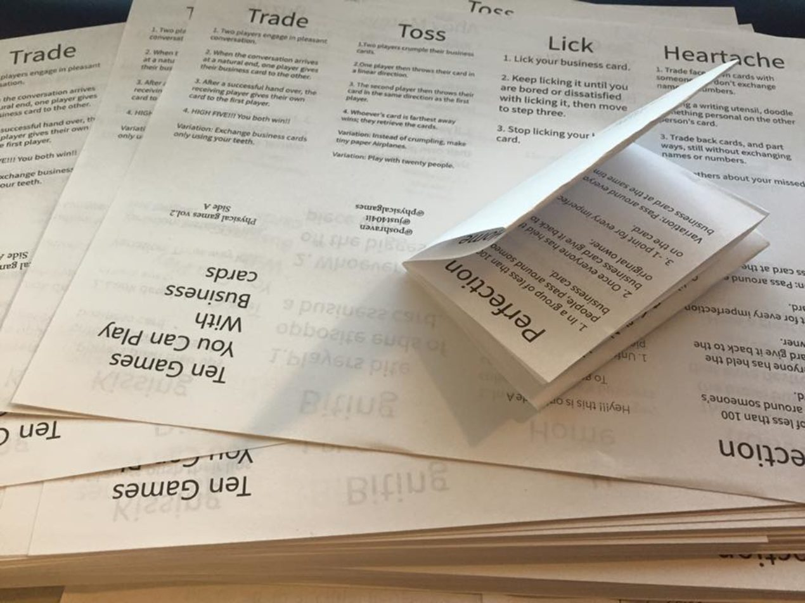

Ten Games You Can Play With Business Cards is a DIY zine collaboration between Samuel Leigh and James Earl Cox III. Whip out this zine, pull out a few business cards, go nuts, have a good time. Play with some business cards.

Game 80/100
Ten Games You Can Play with Business Cards
Ten Games You Can Play With Business Cards is a DIY zine collaboration between Samuel Leigh and James Earl Cox III. Whip out this zine, pull out a few business cards, go nuts, have a good time. Play with some business cards.
Year2015
Development2 month
AvailabilityPlayable